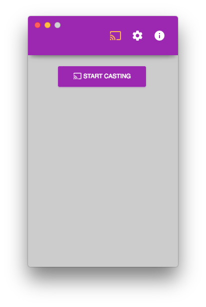
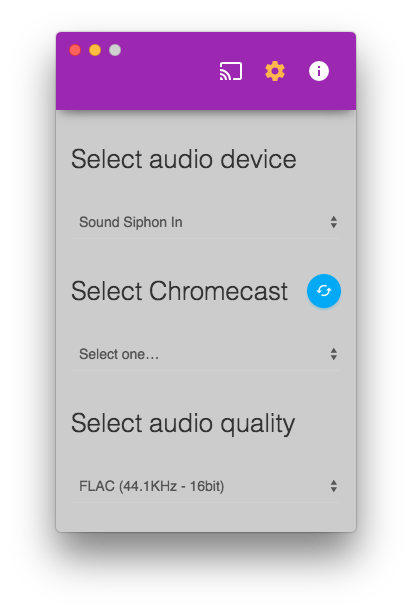
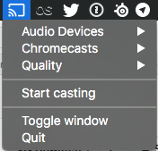

chromecast-gui
Cast your computer audio to a Chromecast (Audio)
Send audio to a Chromecast using MP3 (with various bitrates) or FLAC.



Dependencies and Requirements
macOS (aka OS X)
- 10.9 or higher
Linux
- Ubuntu 12.04 and later, or Fedora 21 or Debian 8
- 64 bit OS
- libpulse0 (PulseAudio)
- libappindicator1 (for tray icon, if supported)
- libnotify-bin (for notifications)
- libflac8
- libavahi-compat-libdnssd1
- .deb package install everything for you :)
Windows
- Windows 7 or later
- 64 bit OS
- Bonjour service (Download it)